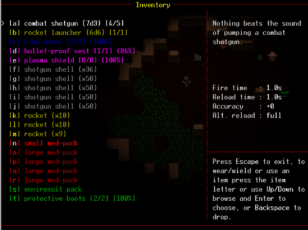

Managing game state with stack-based screens
For a while now I’ve messed around making game prototypes. These things are normally unpolished, little things that explore one or two game concepts. One element of games that has alluded me for quite some time, is finding a nice, simple way to manage the screen state, and transitioning between them.
Lets use an example of a typical game. The very first thing you may have is a loading screen, followed by an intro movie, and then the main screen. The main screen allows you to jump in and out of other screens, setting configuration options, and ultimately starting a new game.
In some cases when transitioning between screens, the state of the previous screen will be lost completely. For example, when you cancel the intro movie early, you normally don’t go back to the intro movie when you quit out of the main screen.
In other cases, the state of the previous screen is retained. For example, going from the main screen to a settings screen and quitting out of the settings screen would normally return you to the main screen, in the same state as you left it.
There is also a third case, which was the one to give me the idea of stack based screens. When you’re playing the game, sometimes you can hit escape, or bring up a menu, and a new menu or screen appears above the game screen, with the game screen rendered underneath, in it’s paused state. This situation seems perfect for a stack, where the top most item has focus, and perhaps screens below it are also rendered.

As we can see in this screenshot from DoomRL, the game screen is rendered, then a partially transparent inventory screen is rendered over the top. We can also imagine that the main screen may also still exist in the stack, maintaining it’s state for when the current game finishes. In this case our stack may look like
- Inventory Screen (partial)
- Game Screen
- Main Screen
If we take the view that a partial screen also renders the one below it, the renderer peeks at the screen stack from top to bottom, and keeps moving down until it finds a screen that isn’t a partial screen (or gets to the bottom), and then moves back up the stack, rendering each one on top of the last. Keypresses and clicks are sent to the top screen only, as it is the one which has focus.
In the small games that I’ve worked on so far, this model has solved the problem quite well. It’s a small problem, but one that can take away focus from actually developing a game. I’ve started work on a javascript version of stack-based-screens which can be found on Github.